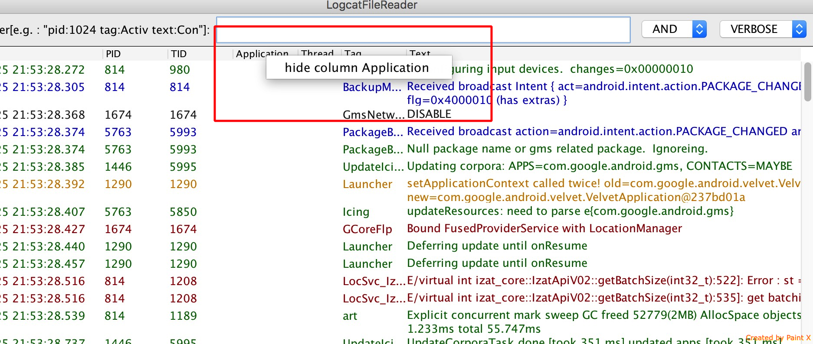

You can run jar with command "java -jar LogcatFileReader-{version}.jar",
make sure the java binary is in your $PATH environment variable, and you type the command under the directory which contains LogcatFileReader-xxx.jar.
Then you will see the following dialog which indicate you to select log file you want view and choose log text format:

If don't like some blank column which no content, you can right click the table header and select the popup menu item which named "hide column ...", like that:
You can just type some text which you want to search from message, and it will work with regex, or we call it ignore case.
Notice: you type "pre" is same as "Pre" and "text:Pre"

This is a example search with tag:
This is a example search with one tag and another tag, It must be no any row matches:
This is a example search with one tag or another tag:
This is a example search with one tag and one text, you can test search with one text and another text(using "text:"), that will be good:

This is a example search with one tag or one text, you can test search with one text or another text:

You also can filter with log level, like logcat:

Point
- You can indicate log file and format with command argument:
"java -jar LogcatFileReader-{version}.jar {log-file-full-path} {log-file-text-format}"
The support format include: long(default, generate from "adb logcat -v long"), threadtime, javacustom.
- The log file should smaller than 200MB, because of open UI too slow, and log file should named end with ".log".
"java -jar LogcatFileReader-{version}.jar {log-file-full-path} {log-file-text-format}"
The support format include: long(default, generate from "adb logcat -v long"), threadtime, javacustom.